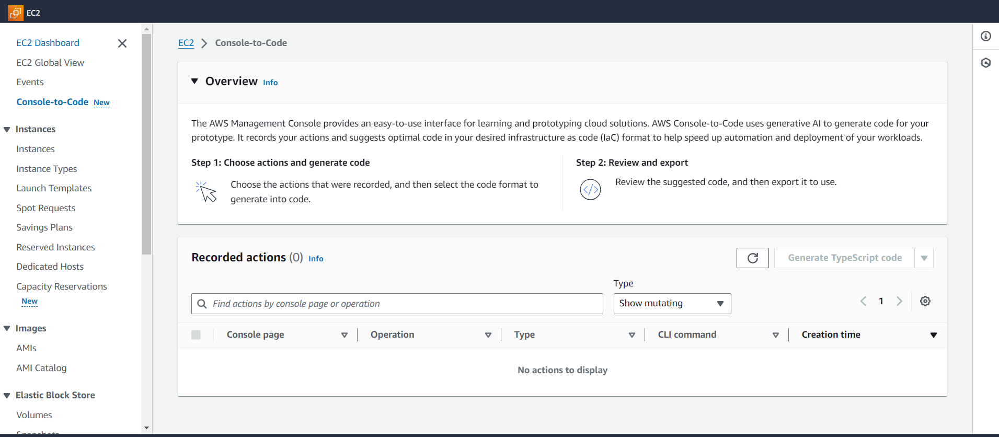

The console provides a guided path for creating resources and testing prototypes. If you want to create the same resources at scale, you’ll need automation code. Console-to-Code is a feature of the Amazon EC2 console that can help you get started with your automation code. Console-to-Code records your console actions, including default values and compatible parameters. It then uses generative AI to suggest code in your preferred infrastructure-as code (IaC) format for the actions you want. You can use the code as a starting point, customizing it to make it production-ready for your specific use case.
There is no additional cost for using Console-to-Code.
How it Works
Console-to-Code records your console actions and provides you with code snippets in various formats. Follow these steps to use Console-to-Code:
You perform actions in the console, such as launching an instance or enabling detailed monitoring.
Console-to-Code records all your actions, including all the default settings and compatible parameters that the console provides.
You choose the actions that you want to use in your automation scripts. These can be mutating or read-only (non-mutating) actions, or both types of actions.
Console-to-Code generates code in your desired infrastructure-as-code (IaC) format, for example, TypeScript.
You copy the code to use in your code development tool or download it to share.
You then use the code as a starting point for your automation scripts. You'll need to validate that the code meets your intent and that the parameters will configure your resources as expected. You'll need to customize the code to make it production-ready for your use case. Once you're satisfied with the code, you can use it in your automation scripts.
For the instructions on how to use Console-to-Code in the Amazon EC2 console, see Use Console-to-Code.

Limitations
The following limitations apply when using Console-to-Code.
Supported Regions
Currently, Console-to-Code is only available in the US East (N. Virginia) Region.
Supported Code Formats
Console-to-Code can currently generate infrastructure-as-code (IaC) in the following code formats:
Use the console to create resources and test prototypes. For example, use the console to configure and launch instances and enable detailed monitoring.
Console-to-Code records every action that you perform.
In the left navigation pane, choose Console-to-Code.
In the Recorded actions table, review your actions that were recorded, and decide which actions to include for code generation.
Use the search field to filter the tab6ttle by a specific console page or action. As you start to type, the table is filtered.
Use the Type drop-down to filter by all actions, mutating actions, or read-only actions.
Note: Only actions taken during the current session are listed. Actions taken during previous sessions are not retained.
Select the checkbox next to each action for which you require code to be generated. Note: Up to 5 actions can be selected at one time.
Choose the button. The button label defaults to the last-selected code format. To select a different code format, choose the arrow next to the button.
Under Review code, choose Copy to copy the code to use in your development tool or Download to download the file for sharing.
Use the code as a starting point for your infrastructure-as-code. You'll need to customize the code to make it production-ready for your specific use case. Note: If you find that the code is not production-ready, please provide us with feedback on how it can be improved (see the following step 9). AWS Support can’t assist you with the generated code or your customized code development.
(Optional) Choose the thumbs-up or thumbs-down to let us know if Console-to-Code helped. If you choose the thumbs-down, you can then choose Provide feedback to tell us how we can improve the code to better help you.
For detailed instructions on how to use Console-to-Code in the Amazon EC2 console, please visit
Use Console-to-Code.